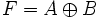
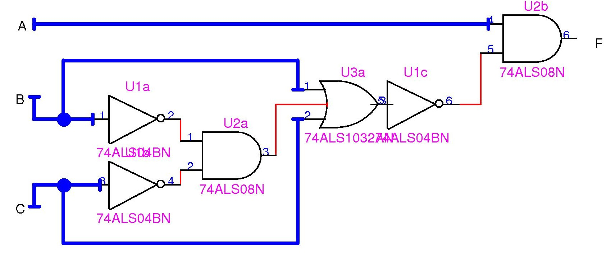

EJERCICIOS
1.- Simplifique a máximo 3 literales la función: F1=AB'C+CD+ABC.
2.- Simplifique a máximo 3 literales la función: F2 =(A+B'+C)(C+D)(A+B+C).
3.- ¿Qué relación observa entre la pregunta F1 y F2?
4.- Despliegue la tabla de la verdad de F1.
5.- Muestre F1 en su forma canónica con términos mínimos. Expréselo también en su forma abreviada.
6.- Muestre F1 en su forma canónica con términos máximos. Expréselo también en su forma abreviada.
7.- Dibuje los esquemáticos de F1 y F2
8.- Siendo A=(431)10 y B=(255)10 :
Halle A y B en hexadecimal.
Halle A y B en Binario.
Halle A-B por resta con complemento a 16.
9.- Siendo X=X2X1X0 , donde X es un número binario de 3 bits representados por Xn, consiga una función booleana que sea cierta si uno y sólo uno de los bits que conforman X es 1.
10.- Dibuje los esquemáticos de F=x'+(yz)' y G=[x(y+z)]'
11.- Existe una operación lógica llamada XOR y su símbolo es un signo de más circunscrito. Lo siguiente:

representa que F es igual a A XOR B. Esta función es cierta cuando uno y sólo uno de sus entradas (en el caso de dos entradas) es 1. Muestre la tabla de la verdad de la función F, halle una función lógica con el mismo resultado pero usando sólo AND, OR y NOT y dibuje el esquemático.
12.- Muestre la tabla de la verdad para F1=(x'y+xy') y F2=(xy+x'y')' y vea si son iguales. Simplifique F2 y vea que obtiene. ¿Cuál es el complemento de F1?
13.- Exprese F=A+BC' en su forma canónica con términos mínimos.
14.- Exprese F=A(B'+C) en su forma canónica con términos máximos.
15.- Siendo F=(A'D+D'+AC+C'+B'C), halle F'.
16.- Simplifique F=[A+B'(C+D')]'.
17.- Convierta (121,2)3 a decimal.
18.- Convierta (123,123)10 a base 4.
19.- Exprese los siguientes números en código exceso a 3
(3)10
(7)10
y los siguientes en 84-2-1
(2)10
(9)10
demuestre con el penúltimo caso que este código es autocomplementario.
20.- Dado el siguiente circuito:

halle F'.